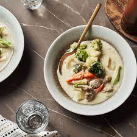

Cream Stew With Chicken And Broccoli

Description
Japanese cream stew with chicken and broccoli is a great example of Western cuisine being adapted into something uniquely Japanese. It consists of a cream or dairy-based broth that is slightly thickened and includes proteins such as chicken or pork, fish, seafood, and vegetables. Today, we will be learning how to make this stew from scratch at home.
Ingredients
- 1 large boneless, skinless chicken thigh, cut into bite-size pieces
- Salt, to taste
- Freshly ground black pepper, to taste
- 1/2 tablespoon olive oil
- 1 medium onion, sliced into 1/4-inch thick pieces
- 1 medium carrot, peeled and cut into bite-size pieces
- 2 medium potatoes, peeled and cut into bite-size cubes
- 2 1/2 cups water
- 2 chicken bouillon cubes
- 2 tablespoons unsalted butter
- 1 cup milk
- 2 tablespoons all-purpose flour
- 2 tablespoons cream cheese
- 1 small head of broccoli, cut into florets
Steps
- Gather the ingredients.
- Season the chicken with salt and pepper
- In a deep stew pot over medium-high heat, heat the oil and saute the chicken until browned.
- Add the onion and sauté on medium heat until soft and translucent.
- Add the carrot and potatoes and stir-fry quickly.
- Pour 2 1/2 cups of water into the pan with the vegetables and bring to a boil.
- Reduce the heat to low and add the consomme (or bullion) cubes. Simmer until carrots and potatoes are softened.
- Meanwhile, in a separate saucepan make the white sauce: Melt the butter on low heat and stir in the flour.
- Cook the flour until it bubbles, making sure to mix well continuously.
- Pour the milk into the flour mixture and cook on medium heat, stirring quickly until it begins to thicken slightly.
- Reduce heat to low and cook until the sauce is thick, making sure to stir constantly. Turn off the heat and set aside.
- In a small bowl, take about 1/3 cup of the soup broth from the chicken and vegetable stew and mix with cream cheese until it melts.
- Add the cream cheese and soup broth mixture back into the stew.
- Add the white sauce to the stew and stir lightly.
- Add broccoli and simmer for about 5 minutes on medium heat. Remove from heat and serve immediately. Enjoy!
Back to main page